コマンドに対してマクロ(エイリアス)を設定する(DOSKEY)
コマンドに対してマクロを設定することができる DOSKEY コマンドの使い方について解説します。
目次
DOSKEYコマンドの使い方
DOSKEY コマンドを実行するとコマンドに対してマクロを設定することができます。書式は次の通りです。
DOSKEY [/REINSTALL] [/LISTSIZE=サイズ] [/MACROS[:ALL | :実行ファイル名]]
[/HISTORY] [/INSERT | /OVERSTRIKE] [/EXENAME=実行ファイル名]
[/MACROFILE=ファイル名][マクロ名=[テキスト]]
DOSKEY コマンドは色々な機能があるのですが、ここではコマンドに対してマクロを設定する利用方法について解説します。今回取り扱うのは書式の次の部分となります。
DOSKEY [/MACROS] [/MACROFILE=ファイル名] [マクロ名=[テキスト]]
では実際に試してみます。
コマンドに対してマクロを設定する
例えば LS と実行した時に、実際には DIR と実行されるようにするには引数に「マクロ名＝実行するコマンド」の形式で指定して次のように実行します。
doskey ls=dir
LS に対して DIR が割り当てられました。
LS と実行すると実際には DIR が実行されます。
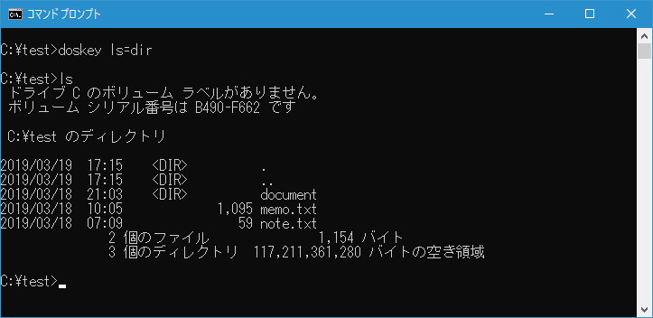
-- --
オプションを付けて割り当てることもできます。例えば LS と実行した時に、実際には DIR /AD と実行されるようにするには次のように実行します。
doskey ls=dir /ad
LS に対して DIR /AD が割り当てられました。
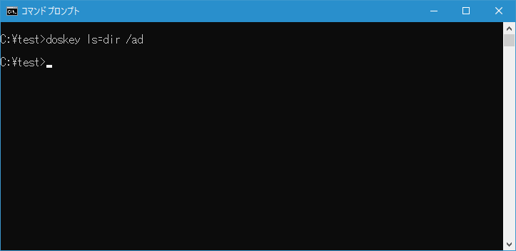
LS と実行すると実際には DIR /AD が実行されます。
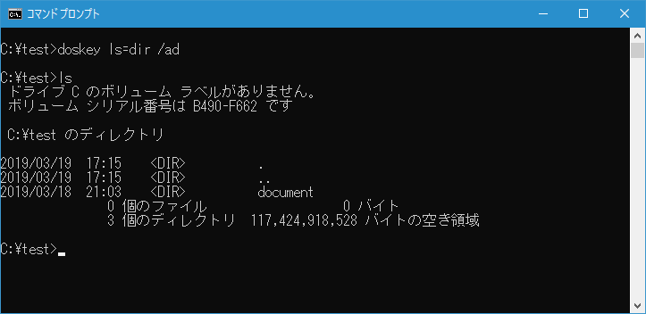
登録したマクロの一覧を表示する
登録したマクロの一覧を表示するには 「/MACROS」オプションを付けて次のように実行します。
doskey /macros
DOSKEY コマンドを実行すると登録したマクロの一覧が表示されます。
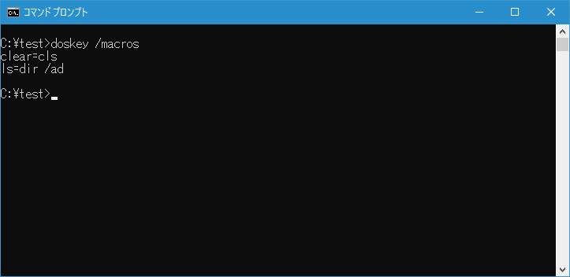
登録したマクロを削除する
例えば登録した「LS」というマクロを削除するには、引数に「マクロ名＝」の形式で指定して次のように実行します。
doskey ls=
マクロ名「LS」が削除されました。
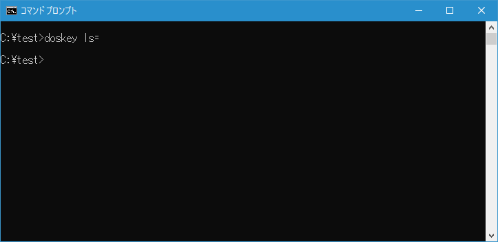
マクロの一覧を表示してみると、「LS」が削除されていることが確認できます。
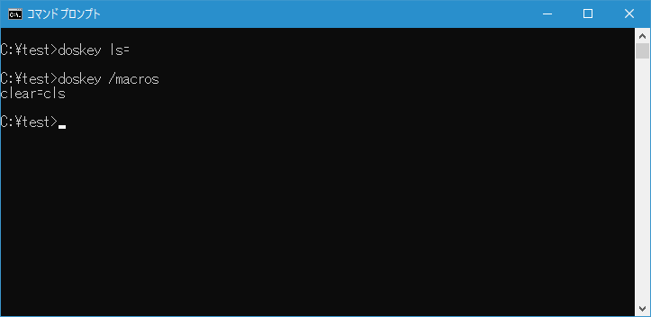
マクロに登録するコマンドでリダイレクトやパイプなどの特殊な文字を使用する
DOSKEY コマンドを使ってマクロを登録する場合、次のように行いました。
doskey マクロ名=実行するコマンド
実行するコマンドに対してパイプやリダイレクトの記述をそのまま行うと、DOSKEY コマンドに対するものと判定されてしまいます。(パイプやリダイレクトについては「リダイレクトとパイプ」を参照されてください)。例えば次のような記述は意図したとおりにはなりません。
doskey tf=tree / f | more
そこでマクロを登録する時に実行コマンドで記述できる特殊な文字が用意されています。
| 特殊文字 | 記号 |
|---|---|
| $g | > |
| $g$g | >> |
| $l | < |
| $b | | |
| $t | & コマンドを連続で実行 |
| $$ | $(文字としての$) |
| $1~$9 | バッチファイル中の %1-%9 と同じ |
| $* | マクロ名に続くテキストで置き換えられるシンボル |
特殊文字を使って先ほどの DOSKEY コマンドを正しく記述すると次のようになります。
doskey tf=tree / f $b more
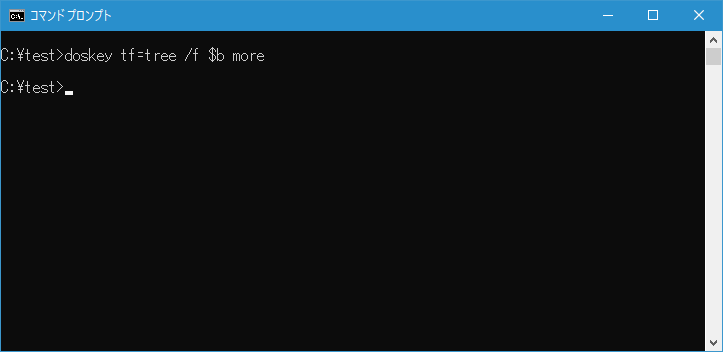
登録したマクロを実行してみると「TREE / F | MORE」が実行されることが確認できます。
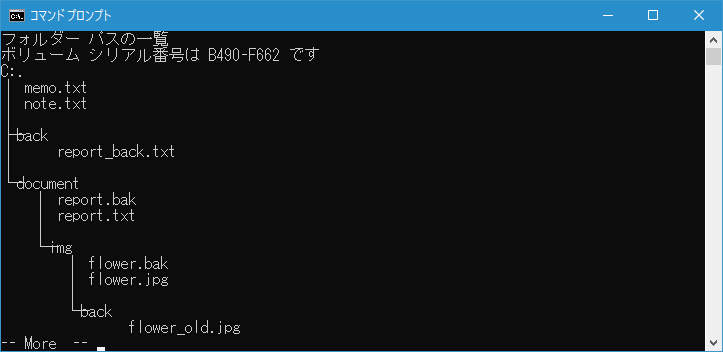
-- --
マクロに対して連続してコマンドを実行するように記述することもできます。例えば特定にディレクトリに移動後に画面をクリアコマンドをマクロに登録するには次のように実行します。
doskey go=cd d:\test $t d: $t cls
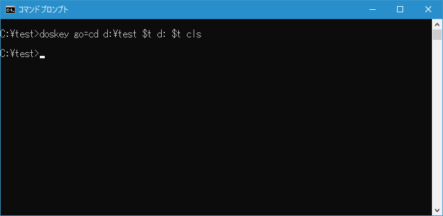
登録したマクロを実行してみると最初に「CD D:\tree」が実行され、次に「D:」が実行され、最後に「CLS」が実行されることが確認できます。
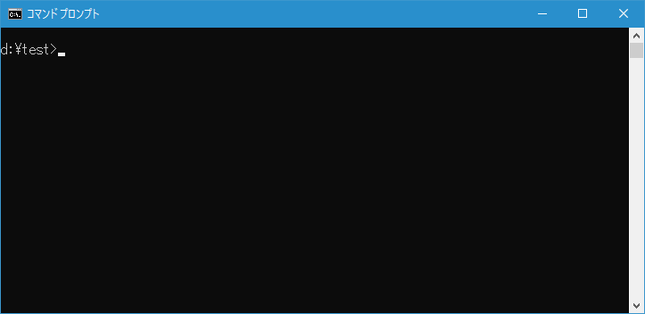
登録したマクロを保存して再利用する
DOSKEY コマンドを使って登録したマクロはコマンドプロンプトを閉じると消えてしまいます。コマンドプロンプトを起動するたびに同じマクロを再利用したい場合には、マクロをファイルに保存しておきコマンドプロンプトが起動したらファイルを読み込みます。
最初に登録したマクロをファイルに保存します。リダイレクトを使い、「DOSKEY /MACROS」の実行結果をC:\test\macros.txt ファイルに保存します。(今回は DOSKEY コマンドに対するリダイレクトなので、先程の特殊文字は使用しません)。
doskey /macros > c:\test\macros.txt
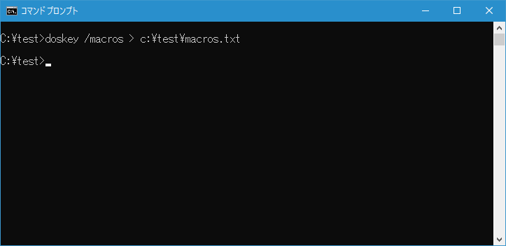
保存したファイルをテキストエディタで開いてみます。
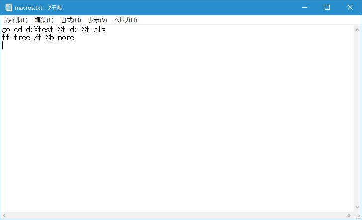
では一度コマンドプロンプトを終了し、再度コマンドプロンプトを起動します。そして登録されているマクロを確認してみると空になっています。
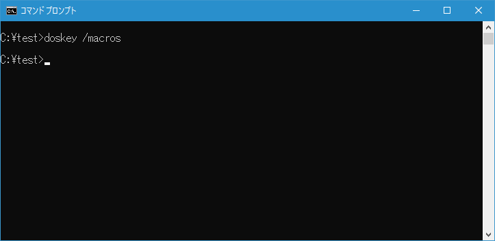
ファイルに保存したマクロを読み込みます。「/MACROFILE=ファイル名」オプションを付けて次のように実行してください。
doskey /macrofile=c:\test\macros.txt
再度登録されているマクロを確認してみるとファイルに保存しておいたマクロが登録されていることが確認できます。
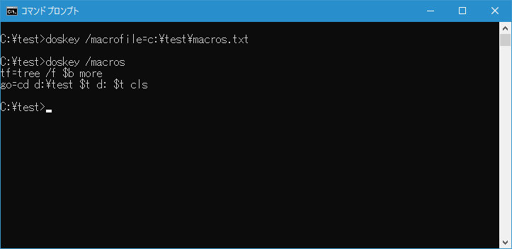
-- --
DOSKEY コマンドを使ってコマンドにマクロを設定する方法について解説しました。
( Written by Tatsuo Ikura )

著者 / TATSUO IKURA
初心者～中級者の方を対象としたプログラミング方法や開発環境の構築の解説を行うサイトの運営を行っています。